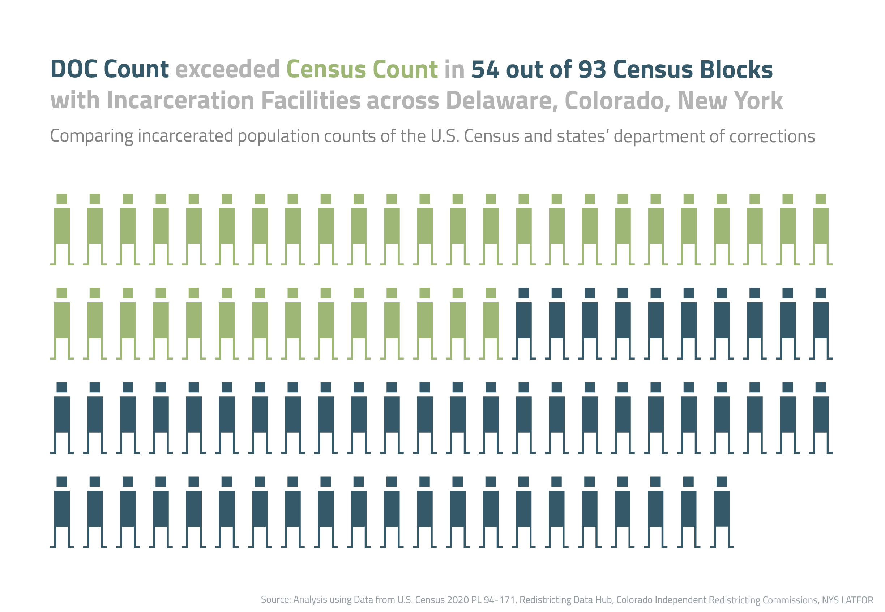
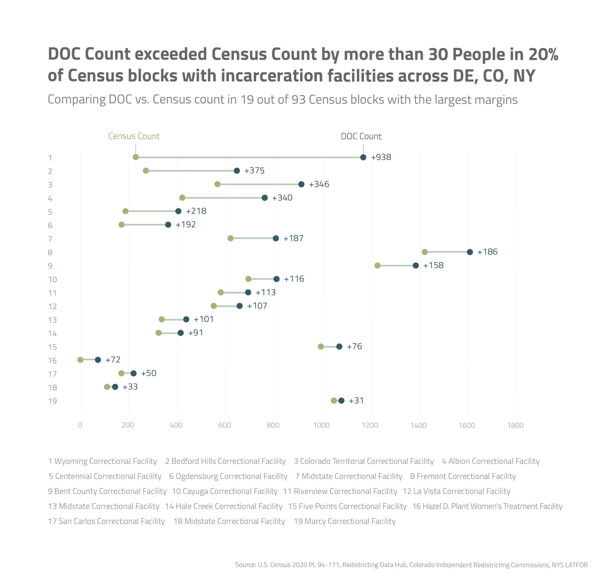
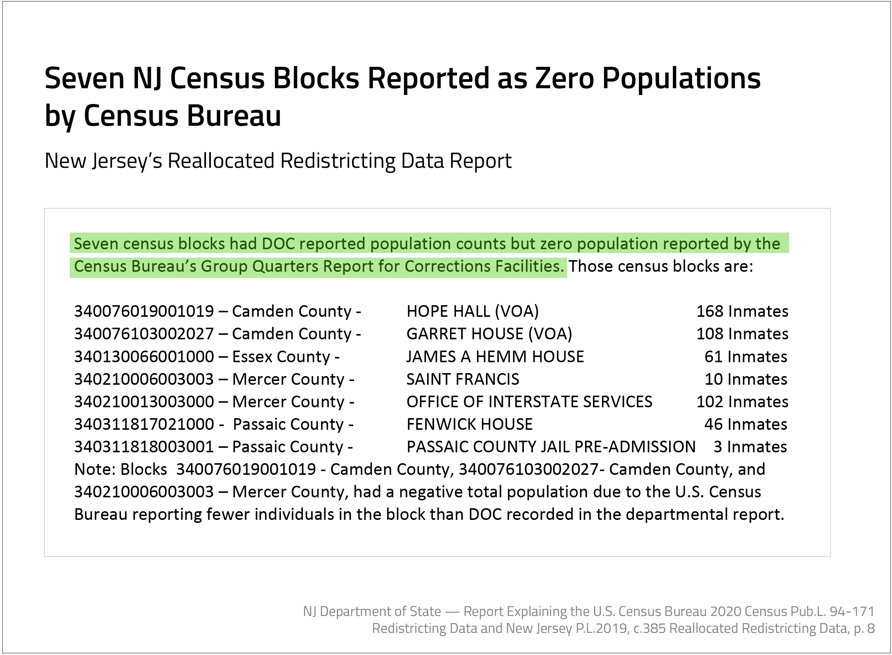
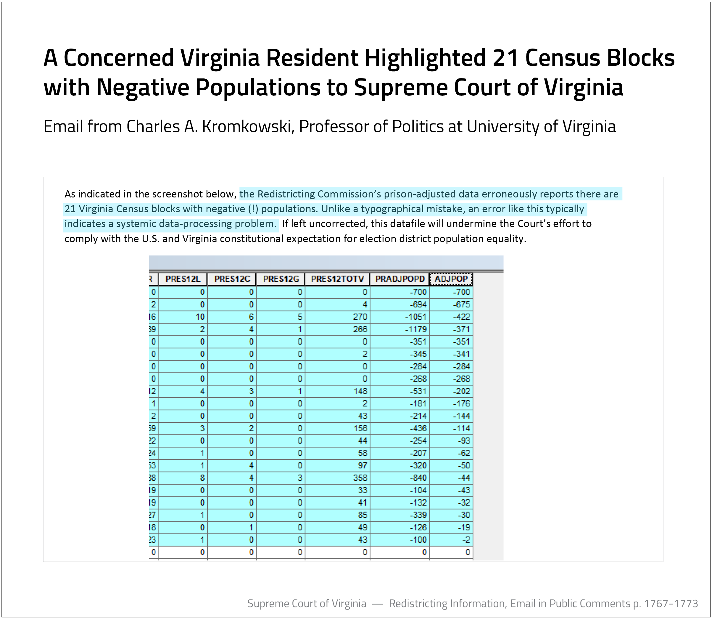
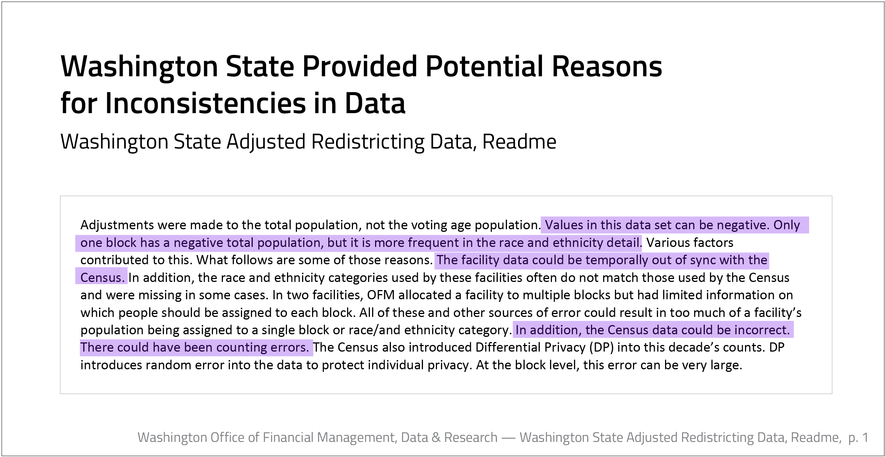
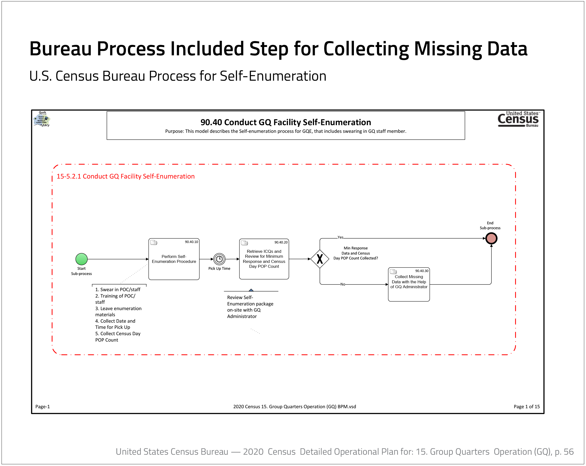

Investigating Census and DOC Population Counts
Data Investigation
2022
Github Project
Data: Python – Pandas, SQLite, Excel, Redistricting Hub API
Graphs: Python – plotnine, Illustrator, Datawrapper
Census Peculiarities in Incarcerated Populations
There were zero people residing at Ray Brook Federal Correctional Institution on April 1st, 2020 according to the most recent U.S. Census. However, the New York State Department of Corrections and Community Supervision (DOCCS) counted prisoners at the facility on the same day.
The redistricting processes of some states revealed discrepancies between the incarcerated population counts of states’ departments of corrections (DOC) and the U.S. Census Bureau.
In 11 states— California, Colorado, Connecticut, Delaware, Maryland, Nevada, New Jersey, New York, Pennsylvania, Virginia, and Washington— demographers reallocated incarcerated populations according to state law or by decision by the redistricting committee for the 2020 redistricting cycle. The demographers used lists of names and addresses provided from the state’s department of corrections to reallocate the populations of incarcerated individuals from the census blocks of incarceration facilities to the census blocks of last known addresses before incarceration to avoid prison gerrymandering.
When demographers attempted to reallocate individuals by subtracting incarcerated populations from the census block where the incarceration facility is located, demographers often discovered the census population count to be lower than that of the department of corrections’ list of names. In some cases, demographers found populations of zero.

In an analysis of three states’ incarcerated population counts— Delaware, Colorado, and New York— the DOC count exceeded the Census count in nearly 60 percent of all the census blocks with incarcerated facilities, a total of 4,008 people difference. Given census blocks also can include people living near an incarceration facility, it would seemingly be more likely for the Census to have a higher count than that of the DOC for a given location, making the difference in counts all the more puzzling.
In roughly 20 percent of the blocks with incarceration facilities, the DOC counted at least 30 people more than the Census. The most extreme example was the census block including Wyoming Correctional Facility, where the Census counted 227 people and New York DOCCS counted 1,165 incarcerated individuals, a difference of over 400 percent.

States’ Documentation
Many states, where re-allocation processes occurred, recorded peculiarities in their process documentation— each state highlighting different challenges and unique inconsistencies.
New Jersey’s documentation revealed seven census blocks with population counts of zero where facilities can be found.

The documentation from the New York State Legislative Task Force on Demographic Research and Reapportionments indicated demographers first subtracted populations from facilities and then added to prior addresses, recording the adjusted populations of each census block before maps could be drawn. In a number of census blocks, negative populations were reported as subtracting more persons listed in DOC’s count from the lower census count yielded negative figures.
On the subject of Ray Brook Correctional’s zero population, the task force wrote, “without additional guidance or population input from the Census Bureau, the Task Force technical staff are unable to subtract any people from that facility.”
One concerned resident in Virginia, a professor Charles Kromkowski submitted a public comment to Virginia’s Redistricting Committee highlighting 21 census blocks with negative populations in the state. “Unlike a typographical mistake, an error like this typically indicates a systemic data-processing problem,” he wrote. “If left uncorrected, this datafile will undermine the Court’s effort to comply with the U.S. and Virginia constitutional expectation for election district population equality.”

Washington state GIS analysts listed potential reasons for the negative populations in their Adjusted Redistricting Data, Readme file. “The facility data could be temporally out of sync with the Census,” the notes suggested. Other potential reasons included the challenge of facilities being assigned to more than one census block and the inclusion of “Differential Privacy” into the 2020 Count. Also the file simply includes, “the Census data could be incorrect. There could have been counting errors.”

While Washington analysts suggested that the differences could be a result of Differential Privacy, or the disclosure avoidance system added during the 2020 census, the Associate Director and Chief Scientist for the U.S. Census Bureau, John M. Abowd denies this as a possibility. He wrote, “this is not a feature of the disclosure avoidance system” in response to questions about the differences in population counts.
Census Processes
In general, the U.S. Census Bureau monitors the accuracy of the census with the Post-Enumeration Surveys, which check the accuracy of the census in sample blocks. Although, incarcerated populations do not seem to be put through the same rigor.
On March 10th, the Bureau is poised to share results of the 2020 Post-Enumeration Survey, though the survey universe did not include group quarters of which incarcerated populations are considered. This follows past actions by the Bureau, which did not include group quarters in surveys in 2000 nor in 2010.
The Census Bureau gathered its 2020 data about incarcerated facilities from a number of methods. Most often, the Bureau counted incarcerated populations by self-enumeration, or the swearing in of a DOC officer as a census enumerator, the person taking the census; other methods employed required e-response or paper submissions.
The process for self-enumeration included a step to “Collect Missing Data with the Help of GQ [Group Quarters] Administrator.”

Next Step in Project: The Effects